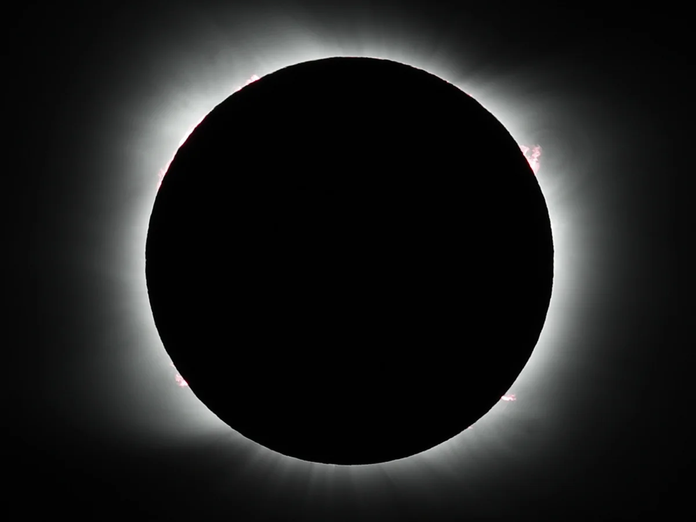

Europe prepare for a rare, near-total solar eclipse
2026, August 12
Europe
Europe is preparing for a spectacular total solar eclipse on Wednesday, 12 August 2026, one of the most significant astronomical events to be visible from the region in decades. It will be the first total solar eclipse visible from mainland Europe since 1999, making it a particularly anticipated event for astronomers and skywatchers.Where will the total eclipse be visible?
The Moon's shadow will sweep across the planet, with totality — when the Moon completely covers the Sun — visible along a relatively narrow path crossing:
Greenland
Western Iceland
Northern and eastern Spain
A small part of Portugal
Parts of northern Russia
NASA says much of Europe will see a partial eclipse, rather than complete darkness.
Spain is expected to be one of the major destinations, with cities including A Coruña, Oviedo, Bilbao, Zaragoza and Valencia falling within or close to the path of totality. Total darkness will last only a couple of minutes, but during that brief period the Sun's corona becomes visible around the Moon.
What about the UK?
The UK will not experience totality this time. Instead, it will see a very deep partial eclipse, with around 90% or more of the Sun covered in many locations.
The eclipse will be visible in the UK during the evening, roughly from 6pm to 8:10pm BST, depending on location.
For Britain, this is particularly notable because the last total eclipse visible from the UK was in 1999. The next one won't arrive until 2090, making the 2026 event a rare opportunity even though Britain itself misses totality.
Spain expects huge crowds
Spain is preparing for an enormous influx of eclipse tourists. Authorities have established hundreds of official viewing areas, while restricting access to some locations because of wildfire risks. More than 33,500 police and security personnel are reportedly being deployed as the country prepares for the event.
Hotels and accommodation in prime viewing areas have also seen exceptionally high demand.
☀️ Why is a total eclipse so spectacular?
During totality, the Moon completely blocks the bright surface of the Sun. For a short period:
The sky becomes dramatically darker.
The Sun's corona becomes visible.
Temperatures can fall noticeably.
Bright planets and stars may become visible.
The horizon can appear to glow with an unusual 360-degree sunset effect.
Animals can behave as though night has arrived.
The total phase will be brief — less than 2½ minutes in the best locations — but that short window is what makes total solar eclipses so extraordinary.
👓 Important safety warning
Even when 90–96% of the Sun is covered, the remaining sunlight is still powerful enough to seriously damage your eyes. Ordinary sunglasses are not sufficient. Proper eclipse glasses or a certified solar filter should be used whenever looking directly at the Sun.
In short: the UK gets a spectacular near-total partial eclipse, while parts of Iceland and Spain get the real show — daytime darkness and the Sun's corona. For mainland Europe, it is the first opportunity to experience totality since 1999, which explains all the "once-in-a-generation" headlines.